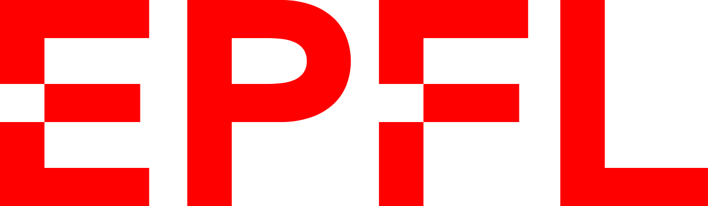

×
×Quantum-Enhanced Swaption Pricing with Quantum Machine Learning
Pioneering the future of quantitative finance through the power of quantum computing.
A swaption is an option granting the right to enter an interest rate swap at a future date. Pricing these instruments requires modeling high-dimensional volatility surfaces — a task where even small improvements translate into substantial financial value.
Swaption pricing is central to risk management, derivatives trading, portfolio hedging, and interest-rate markets. Yet forecasting remains extremely difficult due to high dimensionality and non-linear dynamics.
Can quantum models capture structure in volatility surfaces that classical ones struggle with? We test this by building 4 quantum ML models and benchmarking against classical baselines.
Time-series of swaption price volatility surfaces generated via an affine jump-diffusion model with stochastic volatility calibrated on real data. Each surface is a grid of 14 expiries × 16 tenors = 224 points.
1. Forecasting (main): Predict future swaption prices over a 6-day horizon
2. Imputation (optional): Predict missing values within existing surfaces
Each row = one date. Columns = swaption prices for each (maturity, tenor) pair. Some cells contain missing values to impute. Future rows are the forecasting target.
A high-level view of the 6-step pipeline from raw swaption surfaces to final predictions.
224-dim swaption surfaces (14×16 grid per timestep)
Reduce 224d → 5-20d capturing 99%+ variance
Sliding window of past w timesteps as model input
Photonic circuit encodes & transforms features
Classical head (Ridge / LSTM / GP) produces prediction
Reconstruct full 224d surface from PCA prediction
Before quantum, we established strong classical baselines to properly measure quantum advantage.
Persistence forecast: $\hat{Y}(t+1) = Y(t)$
PCA + sliding window + $L_2$ readout
Gradient-boosted trees on PCA features
Classical recurrent network on PCA
Fixed photonic interferometer as a high-dimensional feature extractor
2 layers of fixed beamsplitters and random phase shifters. Angle encoding on 6 modes, followed by post-encoding interferometer. Fock basis measurement extracts probability distribution.
Modes: 8 · Photons: 3 · Window: 20
PCA components: 6 · Ridge $\alpha$: 1.0
Temporal information is retained through the quantum state evolution, allowing the reservoir to capture short-term dependencies in the volatility surface dynamics.
Gaussian Process with quantum fidelity kernel
Fidelity: $k = \left(\sum \sqrt{p_i \, p_j}\right)^2$
Inner Product: $k = \sum (p_i \cdot p_j)$
RBF-Fock: $k = \exp\!\left(-\gamma \|p_i - p_j\|^2\right)$
One independent Gaussian Process per PCA component. Kernel matrix is precomputed once and shared across all GPs for efficiency.
$k = w \cdot k_{\text{quantum}} + (1-w) \cdot k_{\text{RBF}}$
Systematically measures quantum contribution by varying weight $w \in [0,1]$. Pure quantum ($w=1$) vs classical ($w=0$) performance comparison.
Hybrid autoencoder with trainable photonic bottleneck
Pre-encoding entangling layer → angle encoding → trainable rotation gates → superposition states
Trained end-to-end via MerLin's differentiable QuantumLayer
Optimizer: Adam (lr=0.01)
Early stopping: patience=20
Loss: MSE reconstruction
Regularization: Latent space smoothness
1. Interpolation in latent space for missing values
2. Masked optimization: optimize z to match known surface cells while preserving quantum structure
Quantum-inspired features + classical recurrent network
Boson sampling–based quantum feature extraction:
Fixed photonic interferometer with random beamsplitters and phase shifters. Input features are angle-encoded into the circuit modes.
Fock basis measurement yields probability distributions that serve as high-dimensional quantum features with provable computational hardness guarantees.
Optimizer: AdamW · LR: $3\times10^{-3}$
Weight decay: $1\times10^{-4}$
Scheduler: Cosine annealing
Early stopping: patience=18 · Batch: 32
Instead of predicting absolute values, QRLSTM predicts changes ($\Delta$):
$$\hat{\mathbf{f}}_{t+1} = \mathbf{f}_t + \hat{\Delta}_t$$
This captures the incremental dynamics more effectively in random walk data.
Variational Quantum Imaginary Time Evolution transformer — encodes each time-step into a qubit state, applies a fixed reservoir, then learns Q/K/V projections via trainable quantum circuits.
Variational Quantum Imaginary Time Evolution:
$\partial_\tau|\psi(\tau)\rangle = -H|\psi(\tau)\rangle$
McLachlan variational principle projects the flow onto a parameterised manifold $|\psi(\boldsymbol{\theta})\rangle$:
$M_{jk}\dot{\theta}_k = -\text{Re}\langle\partial_j\psi|H|\psi\rangle$
Collapses quantum state to classical features $\langle Z_i\rangle$ before attention — simpler but less expressive than AGP-Krylov.
4 qubits, 3 layers · Fixed random U3 + brick-wall CZ + long-range CX
Output: expectation values $\langle Z_i\rangle \in [-1,1]$
QRC philosophy — reservoir never trained
2 attention heads · Q, K, V as trainable RY/RZ + CNOT circuits
Causal-masked scaled dot-product attention
Qiskit Statevector simulation
Hybrid training:
• Readout MLP → Adam (classical backprop)
• Quantum attention → parameter-shift rule: $\nabla_j L \approx \frac{L(\theta_j{+}\frac{\pi}{2}) - L(\theta_j{-}\frac{\pi}{2})}{2}$
Counterdiabatic-driven photonic transformer — encodes temporal dynamics inside the unitary evolution via Adiabatic Gauge Potential (Sels & Polkovnikov 2017).
Adiabatic Gauge Potential (Sels & Polkovnikov 2017):
$[H, A_\lambda] = \partial_\lambda H$
Variational Krylov ansatz: $A_\lambda \approx \sum_k \alpha_k O_k$
$O_1 = \delta H$, $O_k = i[H, O_{k-1}]$ (Hermitianised)
Solve a tiny $K{\times}K$ system ($K{=}3$) — microseconds.
Key: operates entirely in Hilbert space — encodes $dx/dt$, $d^2x/dt^2$ into the unitary itself.
8 modes, 4 photons · Fixed random interferometer (never trained)
Output: Fock-state probability distribution (exponentially rich, #P-hard)
Photonic analog of qubit QRC — no barren plateaus
2 attention heads · Q, K, V as trainable interferometers (PS + BS)
Causal-masked scaled dot-product attention
MerLin QuantumLayer option for PyTorch autograd
Hybrid training:
• Readout MLP → Adam (classical backprop)
• Quantum attention → parameter-shift rule: $\nabla_j L \approx \frac{L(\theta_j{+}s) - L(\theta_j{-}s)}{2\sin(s)}$
Through rigorous statistical analysis, we proved the simulated swaption data follows a martingale process (Random Walk without drift).
✓ Augmented Dickey-Fuller: No unit root rejection
✓ KPSS: Stationary around a trend
✓ ACF/PACF: No significant autocorrelation
✓ Variance Ratio Test: Follows random walk
Any model performing significantly worse than naive is overfitting noise. Any model claiming to beat naive by large margins is likely exploiting data leakage or look-ahead bias.
Knowing the data is a random walk, we used this insight to build the final 6-day forecast and to fairly evaluate all models.
Since $X(t+1) = X(t) + \varepsilon$, multi-step forecasts were generated by iteratively applying the random walk:
$\hat{Y}(t+h) = Y(t) + \sum_{i=1}^{h} \varepsilon_i$
For the 6-day test horizon, the naive persistence (last known value) serves as the central prediction, with uncertainty growing as $\sqrt{h} \cdot \sigma$.
All 8 models (4 classical + 4 quantum) were evaluated identically:
1. Train on 4,100 timesteps
2. Predict next-step on 500 validation points
3. Compare MAE & $R^2$ against the naive baseline
4. Models approaching $\text{MAE} \approx 0.00256$ are performing optimally
The 6-day horizon test predictions were generated using the best-performing quantum model (QRLSTM) combined with the random walk insight for multi-step projection.
| Model | Type | Val MAE $\downarrow$ | Val $R^2$ $\uparrow$ | Key Feature |
|---|---|---|---|---|
| Naive (Persistence) | Baseline | 0.002556 | 0.9987 | Theoretical optimum for random walk |
| QRLSTM | Quantum | 0.002621 | 0.9985 | Best quantum model, near-naive performance |
| Ridge Regression | Classical | 0.002847 | 0.9982 | Simple PCA + $L_2$ readout |
| QK-GP (Fidelity) | Quantum | 0.003122 | 0.9978 | Uncertainty quantification $\sigma$ |
| QAE | Quantum | 0.003445 | 0.9973 | Latent space forecasting |
| QRC | Quantum | 0.003678 | 0.9969 | Fixed photonic reservoir |
| XGBoost | Classical | 0.004202 | 0.9959 | Gradient boosting |
| LSTM | Classical | 0.004169 | 0.9960 | Recurrent network |
| QLA-Transformer | Quantum | Not executed — future work | Insufficient compute | |
Questions?
MARCH 2026 · LAUSANNE